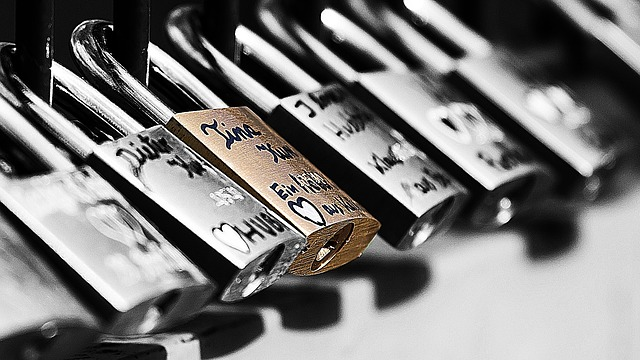

Communiquer avec quelqu’un c’est établir une relation avec lui, c’est lui transmettre un message.
C’est donc la communication que vous utilisez lorsque vous voulez séduire quelqu’un, lorsque vous voulez séduire un homme. Vous devez donc travailler cette communication pour apprendre à lieux séduire un homme qui vous plait. Pour travailler au mieux cette communication vous devez savoir tous les aspects qu’elle peut prendre, vous devez prendre conscience de tous les moyens que vous pouvez utiliser pour communiquer. Vous devrez ensuite veillez à utiliser ces différents modes de communication pour servir vos intérêts : pour séduire l’homme qui vous plait.

Les modes de communication
Lorsque l’on parle de communication on pense souvent à la parole. Et effectivement, c’est elle que nous utilisons tous les jours pour communiquer les uns avec les autres : nous parlons les uns avec les autres, nous échangeons ou bien nous écrivons. Mais contrairement aux idées reçus, ce que nous disons ne constitue pas l’essentiel de la communication, du moins à l’oral. Effectivement à lorsque vous écrivez à quelqu’un, à part des images vous n’avez rien qui complète les mots que vous utilisez. Mais à l’oral et encore plus lorsque vous avez la personne en face de vous, la communication passe par bien plus de chose que les mots que vous prononcez.
Ce que vous dites n’est qu’une infime partie de la communication. En plus de cela, il y a tout ce qui concerne la façon dont vous parlez : le rythme que vous utilisez, les intonations qui varient au fil de vos paroles, tout comme le volume. Ces variations permettent au récepteur de votre message, l’homme qui vous plait, d’en savoir un peu plus sur ce que vous ressentez : joie, tristesse, angoisse … Il peut ainsi savoir si vous êtes intimidée par lui, si vous avez l’impression d’avoir dit une bêtise ou autre. Tous ces paramètres lui permettent de lire entre les lignes de ce que vous dites, même si rien n’est écrit.
En plus de tout cela, il y a tout ce que votre corps dit : il y a le langage corporel. Et vous ne devez surtout pas négliger l’importance de ce mode de communication. Il n’est pas accessoire comme certaines pourrait le penser : il en dit beaucoup plus que ce que vous pensez. Votre posture, vos mimiques, vos rougissements ou non, les gestes que vous faites, la façon que vous avez de les faire… Tous ces éléments donnent des indications à la personne qui se trouve en face de vous. Là encore cela peut l’aider à savoir si vous êtes attirée par lui, dégoûtée, neutre, si vous voulez le séduire ou bien si vous prenez de la distance…
Si c’est vrai que plus l’on connait une personne, plus on est apte à décrypter tous ces éléments et à les comprendre réellement, des paramètres restent identique suivant les personnes. N’en négligez donc aucun, même si c’est la première fois que vous rencontrez un homme et même si c’est votre premier rendez-vous.
Les moyens de communication
Ces modes de communication peuvent être déployés par plusieurs moyens, et chacun peut être une façon de séduire un homme qui vous plait. L’écrit peut vous servir sur les sites de rencontre bien entendu mais également si vous décidez de parler à l’homme qui vous plait sur Facebook. C’est également l’écrit que vous utilisez lorsque vous écrivez des sms à un homme ou que vous lui envoyez un Snapchat. Lorsque vous utilisez l’écrit, n’oubliez jamais qu’il n’y a principalement que les mots qui peuvent vous permettre de faire passer le message que vous souhaitez. Choisissez-les donc bien et utilisez-les à bon escient.
Mais n’oubliez pas que vous pouvez jouer avec les mots pour créer du double sens, faire des clins d’œil et créer de la proximité avec l’homme qui vous plait. Vous pouvez également agrémenter votre écrit de smiley qui vous permettent de faire passer un certain ton afin d’aider l’homme à qui vous parlez à bien comprendre la façon dont vous voulez lui dire les choses. Vous pouvez également joindre à votre écrit des images ou des vidéos grâce aux applications disponibles sur portable, comme Snapchat.
Choisir d’utiliser l’oral ne veut pas forcément dire que vous aurez à votre disposition tous les modes de communication possible. Au téléphone vous n’avez que ce que vous dites et la façon dont vous le dites, avec les intonations, le rythme, le volume… Ces deux paramètres vous permettent déjà de faire passer un grand nombre de message, plus que par l’écrit. Un sourire peut se sentir dans votre voix même si la personne ne vous voit pas. Alors sans exagérer, essayez de rendre votre voix expressive. Si vous voulez séduire un homme sans le voir, vous devez lui laisser accès à vos émotions grâce à vos intonations. Vous n’aurez pas d’exercice particulier à faire pour cela, simplement à vous laisser aller à ce que vous ressentez, sans vous brimer.
Enfin, lorsque vous avez la chance d’avoir l’homme qui vous plait en face de vous, profitez-en. Vous aurez tous les modes de communication à votre disposition sans avoir à utiliser un moyen particulier. C’est aussi possible avec les visioconférences par Skype par exemple. Lorsque vous avez cette chance, ne négligez aucun mode de communication. Ne vous angoissez pas sur ce que vous allez dire et sur la façon dont vous allez le dire. Vous devrez surtout vous concentrer sur votre langage corporel. Si vous avez l’habitude d’être expressive par ce biais, essayez de vous contrôler malgré tout. Vous devez garder une part de mystère pour l’homme que vous voulez séduire.
Echangez avec cet homme
Mais savoir utiliser tous ces modes et moyens de communication n’est pas suffisant pour établir une véritable relation avec l’homme qui vous plait. Plus que de savoir quoi lui dire et comment, vous devez aussi faire attention à créer un échange avec lui. Une relation se fait à deux, la communication aussi. Et c’est aussi le cas d’un couple. Alors si vous voulez séduire un homme, vous devez aussi apprendre à l’écouter et à échanger avec lui. Les deux vont de paire, si vous ne l’écoutez pas, vous ne pourrez jamais vraiment échanger avec lui.
Pour pouvoir écouter l’homme qui vous plait, vous devez lui laisser la chance de s’exprimer. Pour cela, posez-lui des questions. Amenez-le à parler de ce qui lui plait vraiment et essayez d’en savoir plus, de lui permettre de développer. L’écouter vous permettra d’en savoir plus sur lui, comme il peut en savoir plus sur vous lorsque vous parlez. Faites attention à ce qu’il vous dit mais aussi à la façon dont il vous le dit et au langage corporel qui accompagne tout cela. C’est comme ça que vous apprendrez à mieux connaître cet homme qui vous plait et que vous pourrez ensuite vous adapter à lui pour le séduire.
Entre ce que vous lui direz et tout ce que vous apprendrez de lui en l’écoutant, vous pourrez partir sur de bonnes bases pour apprendre à mieux vous connaître, pour échanger avec réussite. Mais pour que cela fonctionne parfaitement, vous devrez faire en sorte que ce soit un véritable échange. Vous ne devez pas parler à tour de rôle. Vous avez le droit de donner votre avis sur ce qu’il vous dit, demandez-lui le sien lorsque vous parlez de choses qui vous tiennent à cœur. Réagissez à ses gestes, à ses intonations et non pas seulement qu’à ce qu’il vous dit.
Pour que cela fonctionne du mieux possible, vous devez vous mettre dans le bon état d’esprit, vous devez être ouverte. Cet état d’esprit doit être vrai. Vous ne pourrez pas lui faire croire que vous êtes ouverte et prête à un véritable échange, prête à créer une véritable relation avec lui simplement par des paroles. Si vous n’avez pas envie de lui plaire, si vous n’avez pas envie d’être dans ce bon état d’esprit, votre corps le fera sentir à l’homme en face de vous-même si vous essayez de le cacher dans vos paroles. Alors ne vous mentez pas et soyez ouverte à la séduction, c’est comme ça que tous vos efforts de communication porteront leurs fruits.